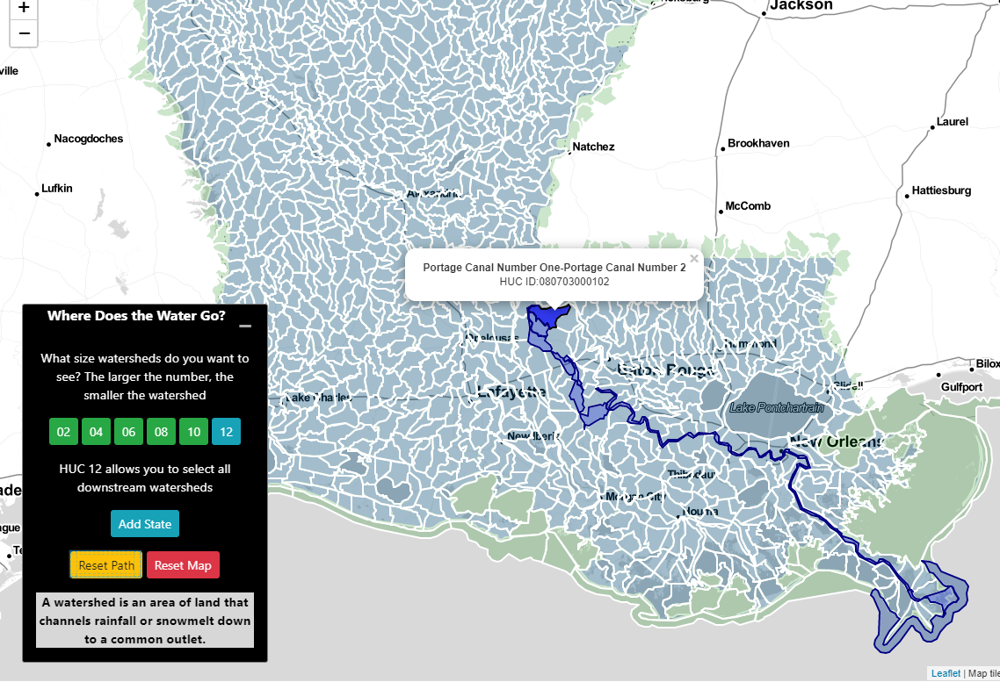
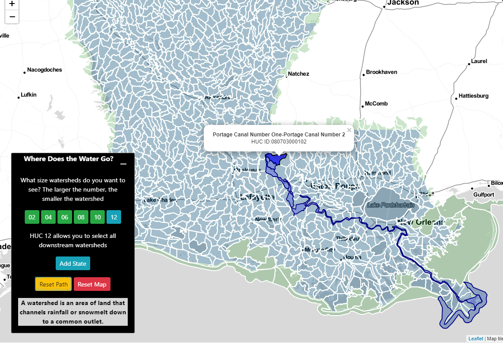

Click on a watershed to see where the water goes!
What size watersheds do you want to see? The larger the number, the smaller the watershed
HUC 12 allows you to select all downstream watersheds
A watershed is an area of land that channels rainfall or snowmelt down to a common outlet.
To investigate your watershed, please click your state or choose from the dropdown and hit GO:
Where Does the Water Go?
What is a Watershed?
It's not a shed made of water!
A watershed is an area of land that channels rainfall or snowmelt down to a common outlet.
Let's take a look at Blackwater Conservation Area in Central, Louisiana for an example!
Where does the water go?
When looking down on the park, you can see how the land slopes towards the pond.
Every time it rains all the water runs into the pond - kind of like a big funnel.
Why does it matter?
It's not just water that ends up in the waterway! It's everything the water carries with it.
This can include soil, leaves, trash that didn't make it into the bin, and anything else loose on the ground.
The bigger picture!
If we zoom out from our park watershed, we can see that it's part of an even bigger watershed.
In fact, the entire area is comprised of a bunch of small watersheds.
Hover over the photo to zoom out!
The bigger picture!
By combining the watersheds that all drain into each other, we can visualize an even bigger watershed. This can help us get a bigger picture of where all the water goes.
Hover over the photo to merge the watersheds!
The bigger picture!
As we zoom out, we can continue to see how water flows throughout the state.
And it's not just water! It's everything the water picks up on the way as well.
The bigger picture!
Our orignial park in Louisina is part of the Mississippi River Watershed.
This watershed is the fourth largest in the world, covering 40% of the continental United States or 1.2 million square miles.
What you do matters
Every time it rains, the water washes everything on your roof, lawn, and yard down your watershed and it will eventually end up in the waterways nearby.
While out of your sight, it's now further downstream and impacting the people and ecosystems there!
Where does YOUR water go?
You can toggle between different size watersheds using our tool! These are classified by Hydrologic Unit Code or HUC.
A watershed with a HUC of 02 is the largest scale - with all of the smaller watersheds combined together. A watershed with a HUC of 12 is our finest scale.


Where does YOUR water go?
If you want to see the areas downstream from you, click your watershed!
You can view the water's path for HUC12 watersheds
 

Explore Your Watershed!
Sources:
Watershed data is from the USGS Watershed Boundary Dataset
Blackwater Conservation Area is part of BREC's park system in East Baton Rouge Parish
East Baton Rouge watershed data included in this slideshow is from EBRGIS